Exploratory Data Analysis, Part I
Lecture 2
Duke University
STA 101 Fall 2026
2026-09-01
Last week
The shape of the course

Study these carefully!
Every main idea, intellectual theme, and computational skill makes an appearance:
Study these carefully and return to them often. By December 4, it will all make sense!
Dispatches from the intro survey
Getting to know you
| No | Yes | |
|---|---|---|
| AP Stats? | 58.43% | 41.57% |
| Prior coding? | 52.33% | 47.67% |
| Friends? | 49.43% | 50.57% |
What’s the last movie you saw in a theater?
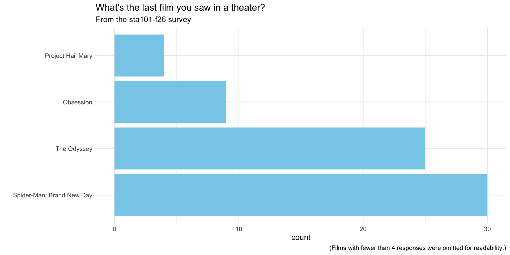
Today
What are we studying?
- Data analysis
- The art of transforming messy, incomplete, imperfect data into knowledge;
- Knowledge often takes the form of pictures and a concise set of numerical summaries;
- Statistical Inference
- Quantifying our uncertainty about that knowledge.
Let’s focus on the first part
How do you compress a dataset down to pictures and numerical summaries?
- What kinds of pictures and summaries are available?
- How do you know what to use, and when?
- How do you get a computer to implement these things?
The type of a variable (numerical, categorical, etc) plays a big role in determining the menu of options. After that, good visualization and summarization is an art that requires good taste.
Our running example
Alison Bechdel
The Bechdel Test
Measures female representation in film:
 (Dykes to Watch Out For - 1985)
(Dykes to Watch Out For - 1985)
Film passes if…
- two female characters;
- talk to each other;
- about something besides a man.
Since I moved to Durham…
It’s been a pitiful two years of filmgoing:
| Title | Year | JZ’s review | Bechdel |
|---|---|---|---|
| Conclave | 2024 | ★★☆☆☆ | ❌ |
| Wicked 1 | 2024 | ★★☆☆☆ | ✅ |
| Nosferatu | 2024 | ★★★★☆ | ❌ |
| Naked Gun | 2025 | ★★★☆☆ | ❌ |
| Bugonia | 2025 | ★★★☆☆ | ❌ |
| Wicked 2 | 2025 | ★☆☆☆☆ | ✅ |
| Marty Supreme | 2026 | ★★★★☆ | ❌ |
| Obsession | 2026 | ★★★★☆ | ❌ |
| The Odyssey | 2026 | ★★☆☆☆ | ❌ |
| Coyote vs. Acme | 2026 | ★★★☆☆ | ❌ |
Go to your container

- Visit the Duke Container Manager (and log in with your NetID);
- (If you haven’t already, reserve the STA101 container on the right-hand-side)
- Click STA101 under “My reservations” on the left-hand side;
- Login, start, and give it a sec to launch in your browser.
Grab today’s files
- Double-check that you have the course project loaded in the upper right corner;
- Go to the Git tab in the upper right pane and click Pull.

Load today’s package(s)
It’s just the one today:
Today’s data
# A tibble: 1,615 × 7
title year gross_2013 budget_2013 roi binary clean_test
<chr> <dbl> <dbl> <dbl> <dbl> <chr> <chr>
1 21 & Over 2013 67878146 13000000 5.22 FAIL notalk
2 Dredd 3D 2012 55078343 45658735 1.21 PASS ok
3 12 Years a Slave 2013 211714070 20000000 10.6 FAIL notalk
4 2 Guns 2013 208105475 61000000 3.41 FAIL notalk
5 42 2013 190040426 40000000 4.75 FAIL men
6 47 Ronin 2013 184166317 225000000 0.819 FAIL men
7 A Good Day to Die Hard 2013 371598396 92000000 4.04 FAIL notalk
8 About Time 2013 102648667 12000000 8.55 PASS ok
9 Admission 2013 36014634 13000000 2.77 PASS ok
10 After Earth 2013 304895295 130000000 2.35 FAIL notalk
# ℹ 1,605 more rowsAside: variable assignment <-
You just saw me do this:
- This is called variable assignment. We’re saving an object so we can use it later;
- Right-hand side: the thing you want to store (the data);
- Left-hand side: the name you want to give it so you can refer to it later;
-
In the middle: the assignment operator
<-.
Our variables
Every row is a film, and the columns include:
-
title: name of movie -
year: release year of movie (between 1990 and 2013); -
gross_2013: how much did the movie earn at the box office (in 2013 $); -
budget_2013: how much did the movie cost to make (in 2013 $); -
roi: Return on investment, calculated as the ratio of the gross to budget;- If the movie broke even, roi is 1;
- If the movie made money, roi is greater than 1;
- If the movie lost money, roi is between 0 and 1;
-
clean_test: Bechdel test result:-
ok= passes test; -
dubious= unclear; -
men= women only talk about men -
notalk= women don’t talk to each other; -
nowomen= fewer than two women;
-
-
binary: Bechdel Test PASS vs FAIL binary
Can we reproduce this claim?
From FiveThirtyEight
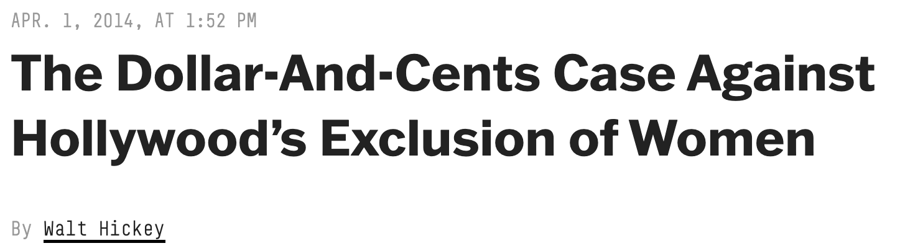
“We did a statistical analysis of films to test two claims: first, that films that pass the Bechdel test — featuring women in stronger roles — see a lower return on investment, and second, that they see lower gross profits. We found no evidence to support either claim.”
🚨 Warning: resist the causal temptation!
These data are purely observational. No experiment was done, and I don’t think “nature” delivered any conditions that mimic experimental variation. We will only be able to talk about the mere association between female representation and box office performance.
Exploring a single numerical variable
The films’ grosses
The box office revenue for the films is a numerical variable:
[1] 67878146 55078343 211714070 208105475 190040426 184166317 371598396
[8] 102648667 36014634 304895295- A human cannot stare at this list of numbers and learn anything. We need pictures and summaries. So…what pictures? what summaries? what are we even trying to learn?
- We want to know where these numbers are typically concentrated, how spread out are they, and what is their shape;
- A histogram can answer those questions.
Plotting a histogram
Start with a blank canvas:

Plotting a histogram
What variables are we looking at?
The aesthetic mapping is where we tell the computer what variables in the data frame we want to use and how we want to use them.
Plotting a histogram
What kind of plot for this numerical variable:

Plotting a histogram
Add labels:
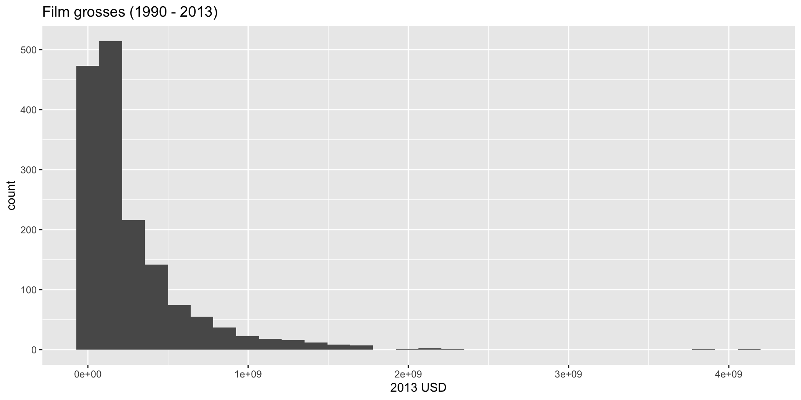
Y’know…so we know what we’re looking at!
Plotting a histogram
Increase font size and give it a minimalist look:
Dataviz with ggplot is like building a cake

- Every plot element is a new layer, and you stack ’em up;
- If the different commands are like the layers of sponge, then the plus signs in between are like the icing. Don’t forget the icing!
The grammar of graphics
This design philosophy is described in the book The Grammar of Graphics and implemented in the ggplot2 package.


How is a histogram drawn?
- Start with the number line (horizontal axis);
How is a histogram drawn?
- Start with the number line (horizontal axis);
- Put your data values on the line;
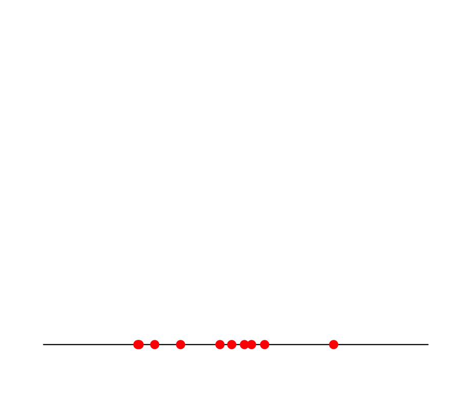
How is a histogram drawn?
- Start with the number line (horizontal axis);
- Put your data values on the line;
- Break the line into bins;
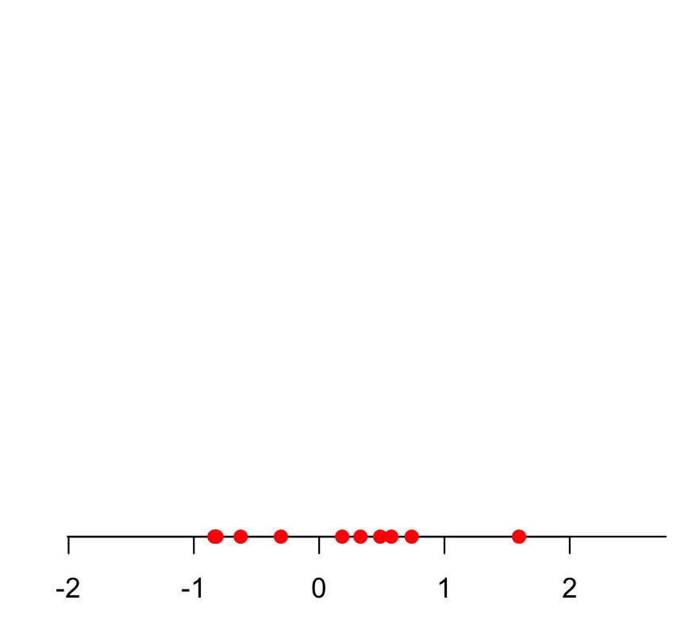
How is a histogram drawn?
- Start with the number line (horizontal axis);
- Put your data values on the line;
- Break the line into bins;
- Count how many data values fall in each bin;
How is a histogram drawn?
- Start with the number line (horizontal axis);
- Put your data values on the line;
- Break the line into bins;
- Count how many data values fall in each bin;
- Put bars over the bins (height = count).
Choice: how do you draw the bins? How many? How wide?
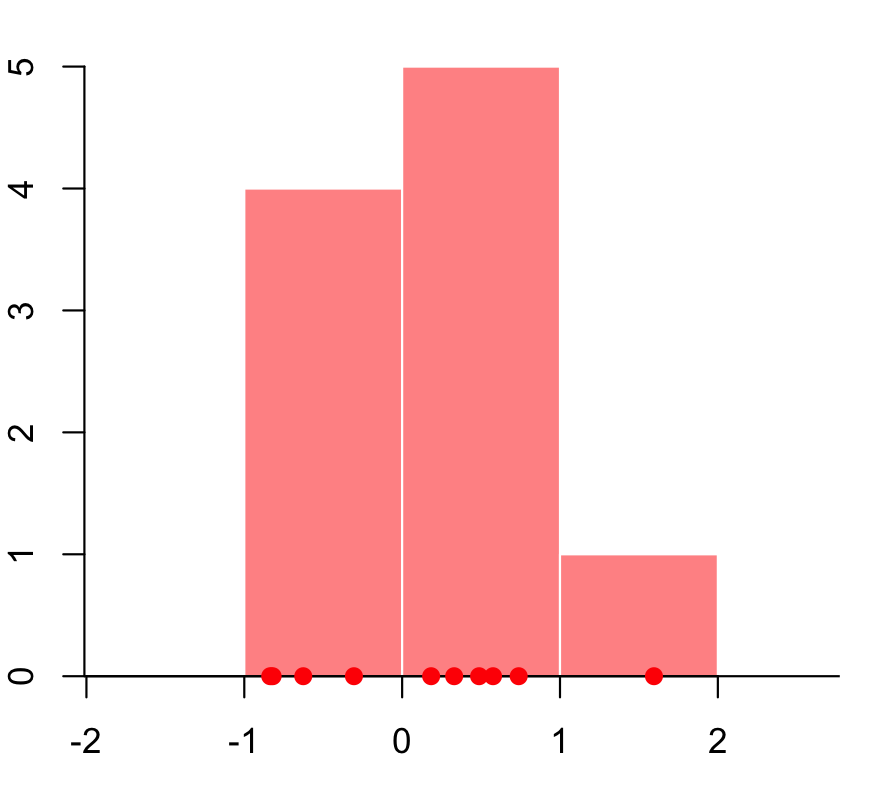
Back to Bechdel
R makes a default choice about the number/width of bins:
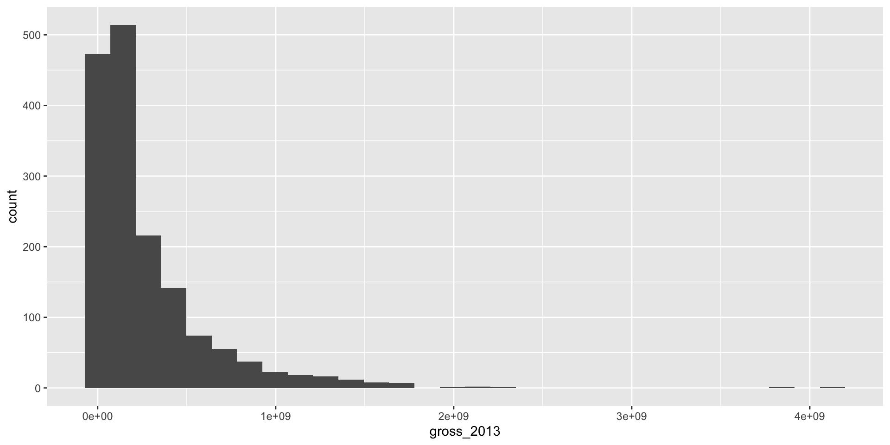
You can override the default
Fewer, wider bins:
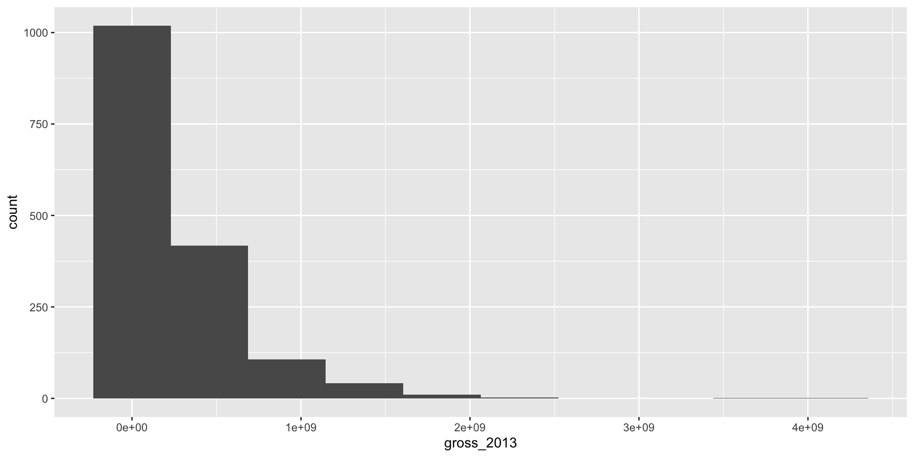
You can override the default
Many, thinner bins:
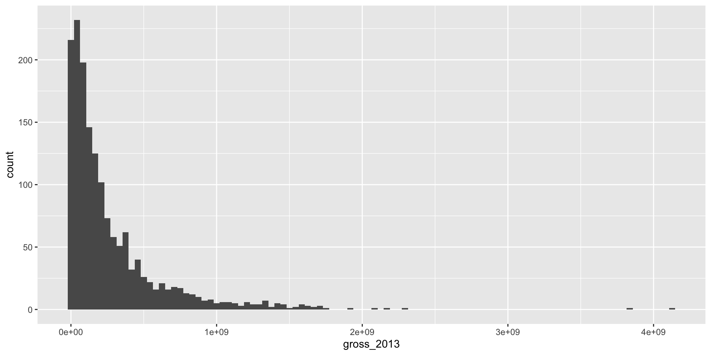
You can go too far either way
Part of the art here is developing an eye for what looks good.
Another option: instead of a histogram
Another option: a density

Compare
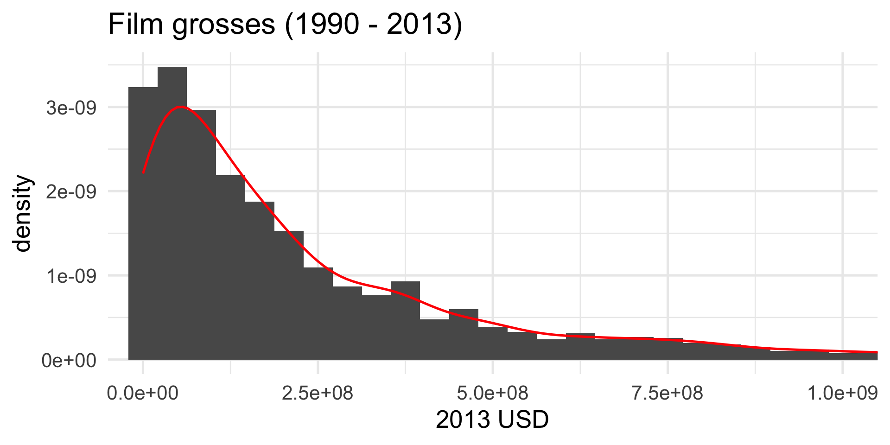
Prettier. Smooths out the lumps and bumps. There are still defaults you could learn to override.
But let’s make it nice
What we have so far:
But let’s make it nice
We don’t need to see everything, do we?
But let’s make it nice
A pop of color:
But let’s make it nice
I can’t hear you:
But let’s make it nice
Give it some body:
But let’s make it nice
Too aggressive:
Yet another option: instead of a histogram

Yet another option: a boxplot
How is a box plot drawn?
The middle of the box is the median. 50% of the data are below, and 50% are above:
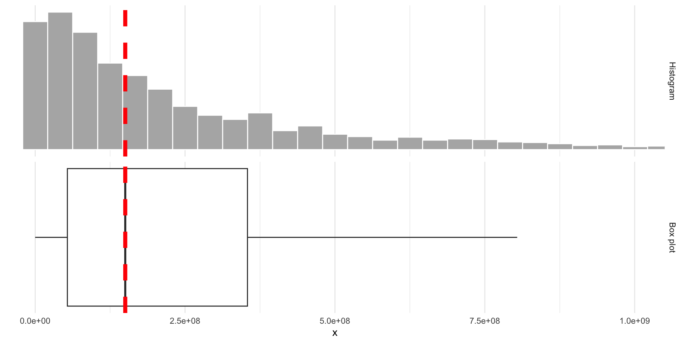
How is a box plot drawn?
The lower edge of the box is the 25% quantile. 25% of the data are below, and 75% are above:
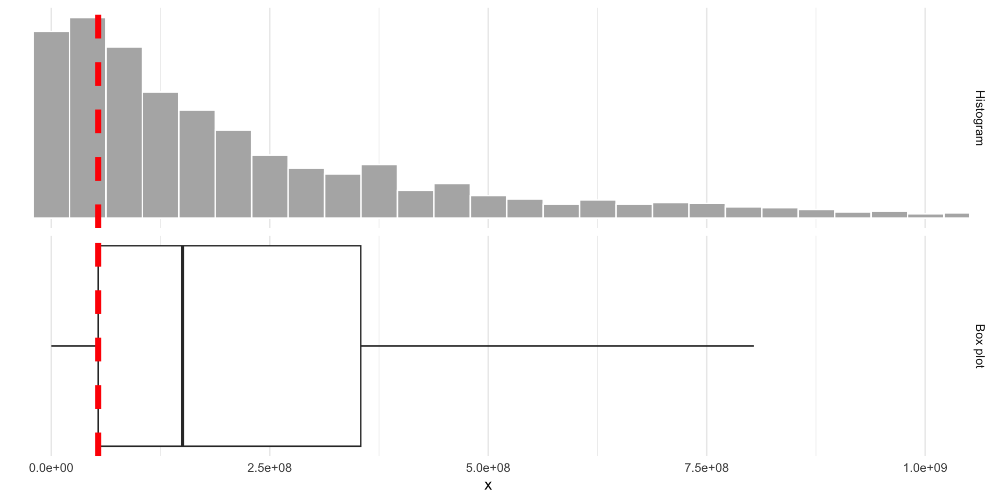
How is a box plot drawn?
The upper edge of the box is the 75% quantile. 75% of the data are below, and 25% are above:
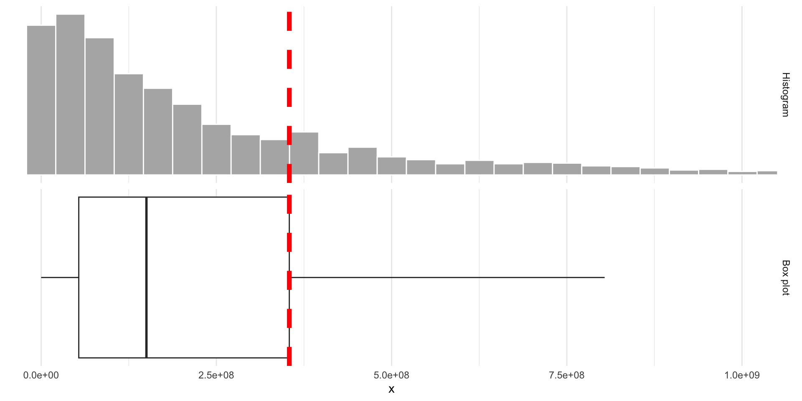
Box plot facts
- A box plot is easier to read quickly than a histogram because it eliminates clutter and immediately draws your eye to those main features: center, spread, and skew;
- The box spans the middle 50% of the data;
- The width of the box is called the inner quartile range (IQR) and it measures spread;
- From the docs (
?geom_boxplot):
The upper whisker extends from the hinge to the largest value no further than 1.5 * IQR from the hinge (where IQR is the inter-quartile range, or distance between the first and third quartiles). The lower whisker extends from the hinge to the smallest value at most 1.5 * IQR of the hinge. Data beyond the end of the whiskers are called “outlying” points and are plotted individually.
Box plots obscure modality
Same box plot:
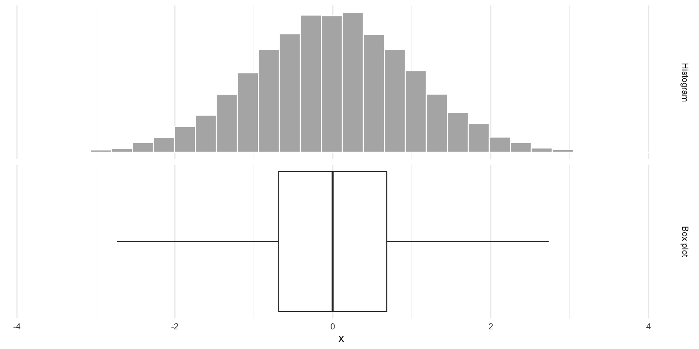
Box plots obscure modality
Very different distributions:
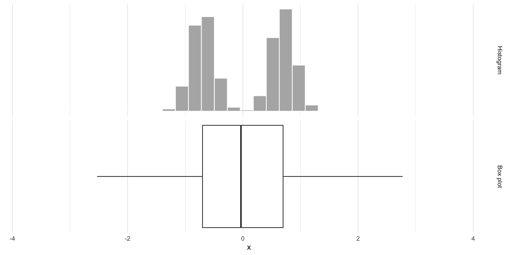
So…now what?

Are we just eyeballing pictures?
No! There are numerical summaries you can compute to quantify your visual intuition:
- center: mean (aka average), median, mode, …
- spread: variance, standard deviation, inner quartile range (IQR), …
And there will be more: correlation coefficients, regression estimates, etc.
Some formulas (don’t sweat it)
Let \(x_1\), \(x_2\), …, \(x_n\) be the numbers listed in the column of our data frame. So \(n\) is the number of rows, or the sample size. Then:
The sample average (aka mean):
\[ \bar{x}=\frac{x_1+x_2+...+x_n}{n}=\frac{1}{n}\sum\limits_{i=1}^n x_i \]
The sample standard deviation:
\[ s = \sqrt{\frac{1}{n-1}\sum\limits_{i=1}^n(x_i-\bar{x})^2}. \]
Underneath the square root, you have the “average squared distance from the average,” or the sample variance.
How does the computer do it?
# A tibble: 1 × 2
avg s
<dbl> <dbl>
1 271414482. 353676712.-
summarizecreates a new data frame that stores the summaries; - You can compute as many summaries as you want;
- To the left of the equal signs are your choice of column names in the new data frame you are creating. You can type whatever you want here (within reason);
- To the right of the equal signs is
Rcode that computes the summaries. You must use the correct command names (case sensitive):mean,median,quantile,sd,var, etc; - If you want to learn what these do, read the documentation (eg
?quantile).
Aside: the pipe operator |>
The pipe operator passes what comes before it into the function that comes after it as the first argument in that function:
We will use it to build up data summaries and transformations step-by-step.
Like a Russian stacking doll

More summaries
bechdel |>
summarize(
avg = mean(gross_2013, na.rm = TRUE),
sdev = sd(gross_2013, na.rm = TRUE),
q50 = median(gross_2013, na.rm = TRUE),
q25 = quantile(gross_2013, 0.25, na.rm = TRUE),
q75 = quantile(gross_2013, 0.75, na.rm = TRUE),
iqr = IQR(gross_2013, na.rm = TRUE)
)# A tibble: 1 × 6
avg sdev q50 q25 q75 iqr
<dbl> <dbl> <dbl> <dbl> <dbl> <dbl>
1 271414482. 353676712. 150218382. 53689120. 354101229 300412109.Numbers and pictures, working together
Where are the grosses concentrated?
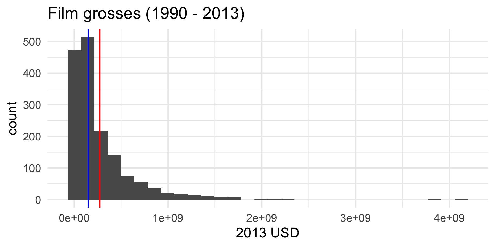
If there is only one peak, then…

The mean is more sensitive to “outliers” than the median. The mean will get dragged in the direction of the skew more aggresively.
Summary
Visualizing and summarizing one numerical variable:
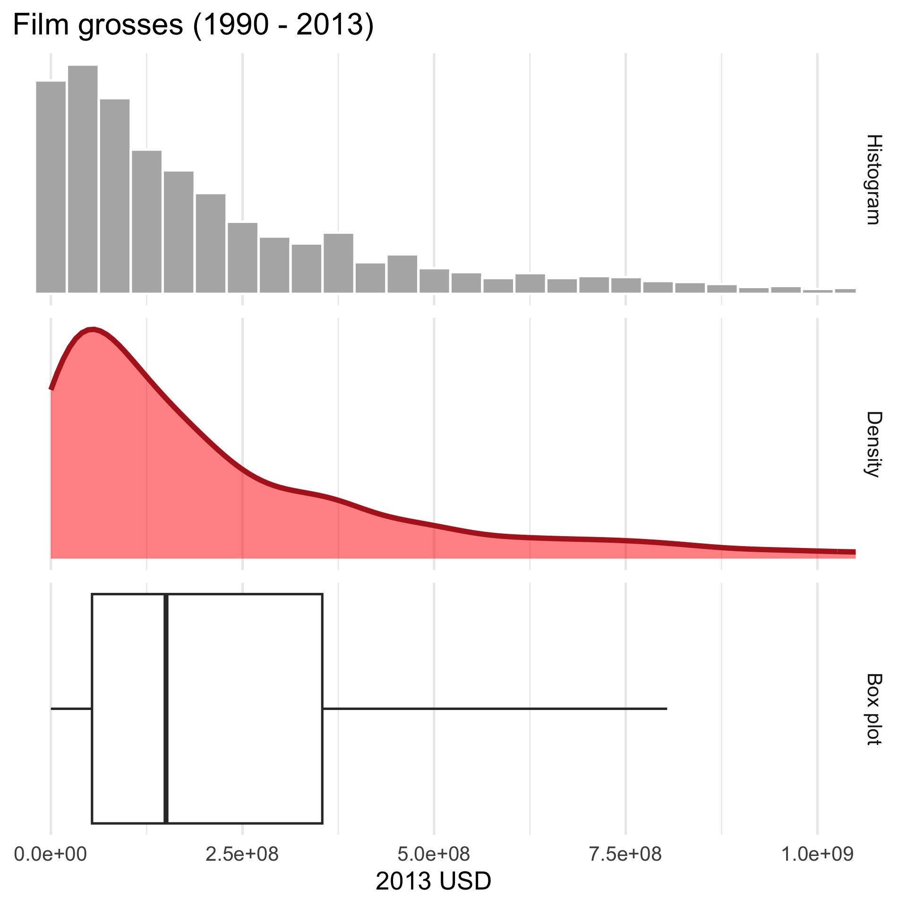
bechdel |>
summarize(
avg = mean(gross_2013, na.rm = TRUE),
sdev = sd(gross_2013, na.rm = TRUE),
q50 = median(gross_2013, na.rm = TRUE),
q25 = quantile(gross_2013, 0.25, na.rm = TRUE),
q75 = quantile(gross_2013, 0.75, na.rm = TRUE),
iqr = IQR(gross_2013, na.rm = TRUE)
) |>
glimpse()Rows: 1
Columns: 6
$ avg <dbl> 271414482
$ sdev <dbl> 353676712
$ q50 <dbl> 150218382
$ q25 <dbl> 53689120
$ q75 <dbl> 354101229
$ iqr <dbl> 300412109Exploring a single categorical variable
The test results
The test result for the films is a categorical variable:
[1] "notalk" "ok" "notalk" "notalk" "men" "men" "notalk" "ok"
[9] "ok" "notalk"Visualization and summarization will be a bit more straightforward here. Things get fun when categorical variables interact with other stuff.
Picture: bar plot
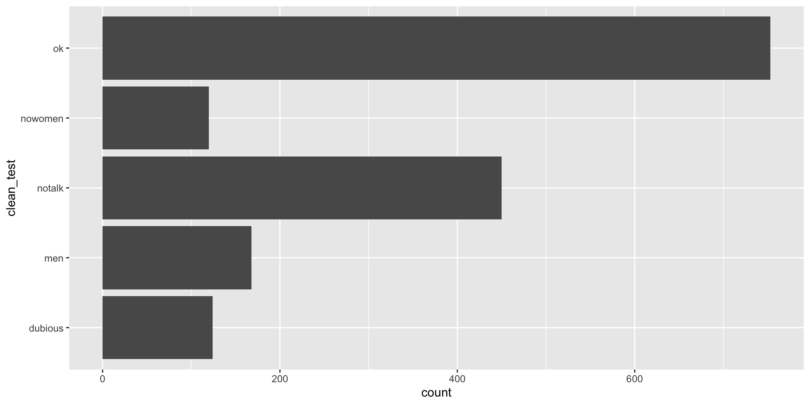
Picture: bar plot
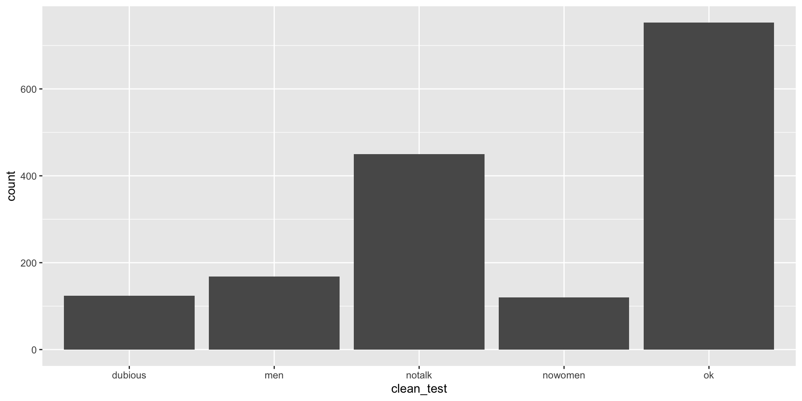
Numerical summary: tally it up
Numerical summary: proportions
Seriously, it’s just like the dolls
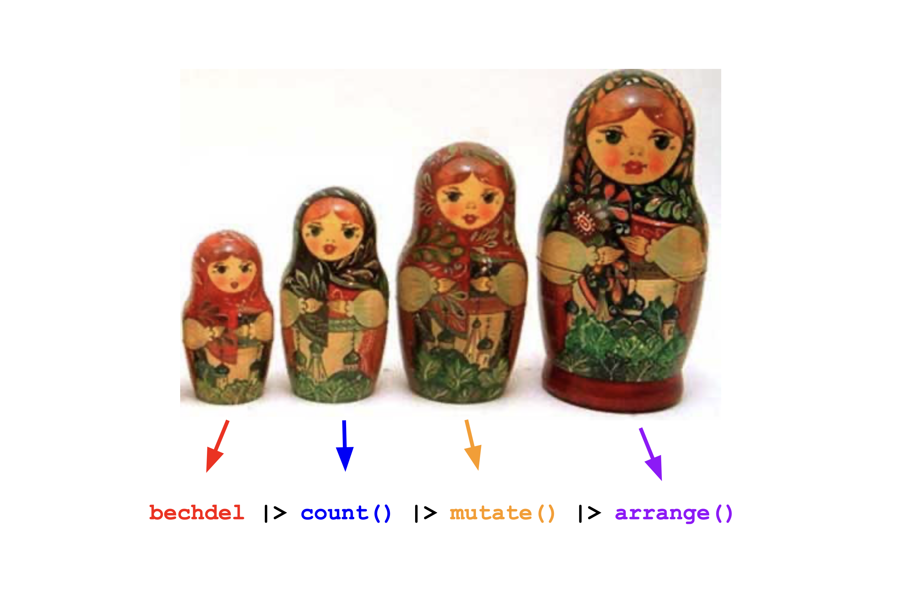
This is so much harder to read
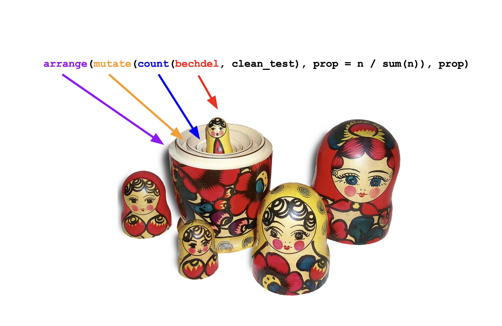
Exploring two numerical variables
Go from one column of numbers to two
# A tibble: 1,615 × 2
budget_2013 gross_2013
<dbl> <dbl>
1 13000000 67878146
2 45658735 55078343
3 20000000 211714070
4 61000000 208105475
5 40000000 190040426
6 225000000 184166317
7 92000000 371598396
8 12000000 102648667
9 13000000 36014634
10 130000000 304895295
# ℹ 1,605 more rowsScatter plot
Add a “trend” line
Add a “trend” line
A numerical summary: correlation
Correlation (more on this next week)
- Measures the strength and direction of the linear association between two numerical variables;
- Tells you how tightly the points cluster around a straight line;
- Ranges between -1 and 1;
- Same sign as the slope.
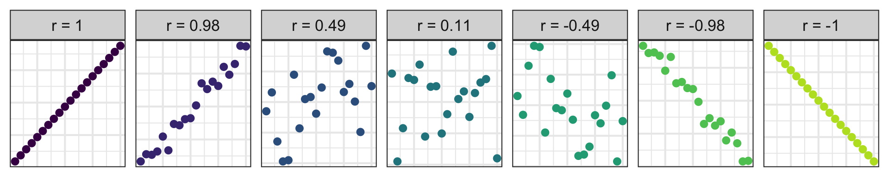
Exploring one categorical variable and one numerical variable together
Back to the research question
What does passing The Bechdel Test mean for a film’s finances?
- Categorical variables:
clean_testandbinary; - Numerical variable:
roi.
How does roi change depending on the category? To answer, we can use all the tools for univariate numerical data, but within the groups.
Side-by-side box plots (preferred)
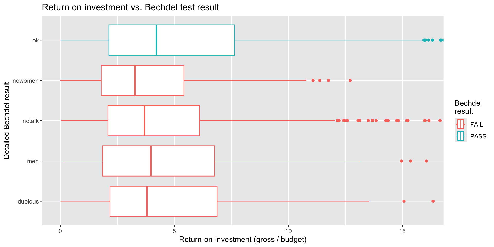
Side-by-side histograms (…eh)
Code
bechdel |>
mutate(
clean_test = fct_rev(clean_test)
) |>
ggplot(aes(x = roi, fill = binary)) +
geom_histogram(binwidth = 0.5) +
facet_wrap(~clean_test, nrow = 5) +
labs(
title = "Return on investment vs. Bechdel test result",
x = "Return-on-investment (gross / budget)",
y = "Detailed Bechdel result",
fill = "Bechdel\nresult"
) +
coord_cartesian(xlim = c(0, 16))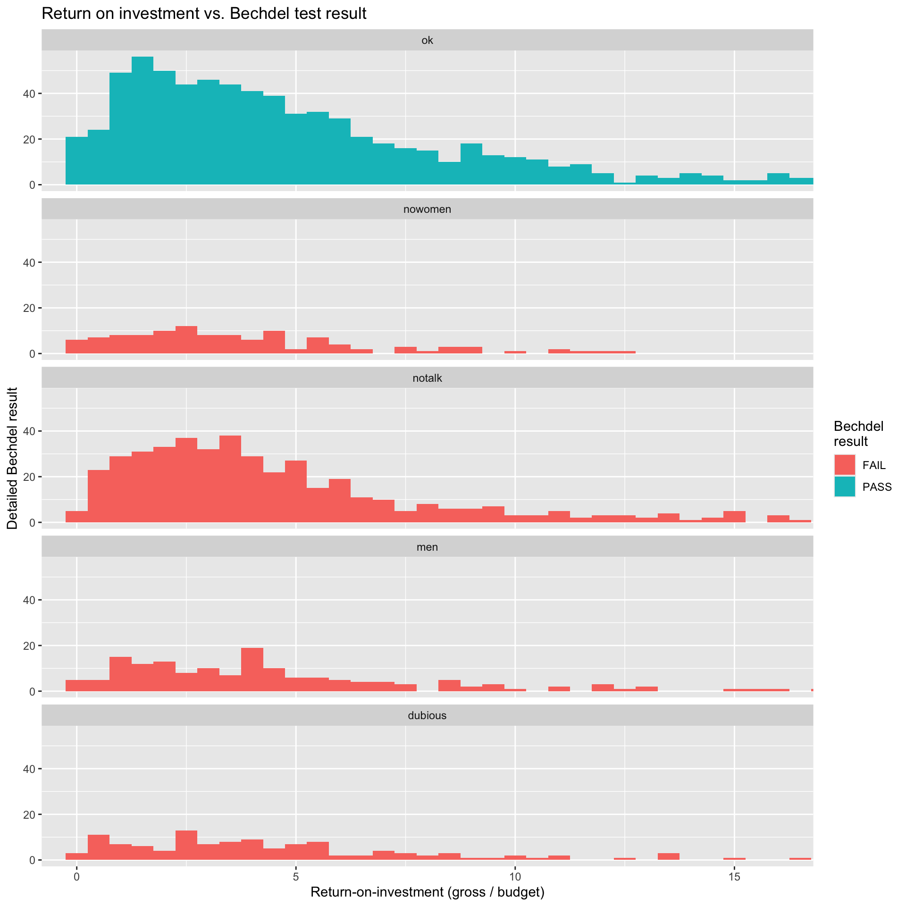
Within-group summaries
bechdel |>
group_by(clean_test) |>
summarize(
avg = mean(roi, na.rm = TRUE),
q50 = median(roi, , na.rm = TRUE)
)# A tibble: 5 × 3
clean_test avg q50
<chr> <dbl> <dbl>
1 dubious 11.2 3.80
2 men 9.30 3.96
3 notalk 6.93 3.69
4 nowomen 9.52 3.27
5 ok 7.99 4.21The conclusion depends on the summary you choose. Which is more appropriate?
Wrap-up
The art
Today you saw some basic building blocks. The art of data visualization is in their combination. How do you trick the human brain into appreciating complex multivariate relationships when the human brain cannot really visualize in high dimensions?
Computational themes
Every coding task in this class will be some combo of these two things:
Building cakes (ggplot)
Stacking dolls (pipe |>) 
Master these, and everything will be coming up roses!